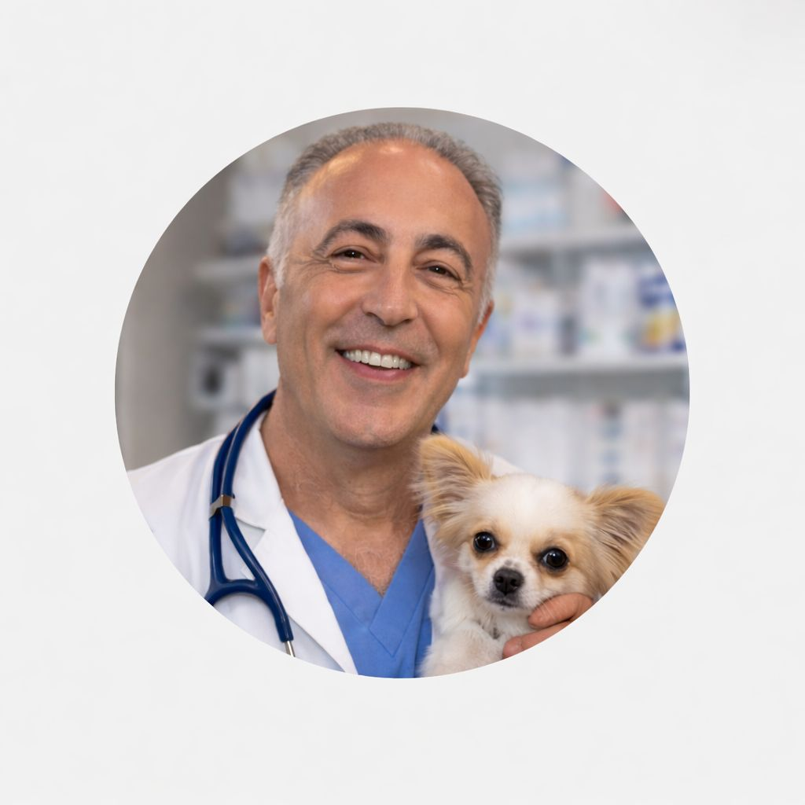
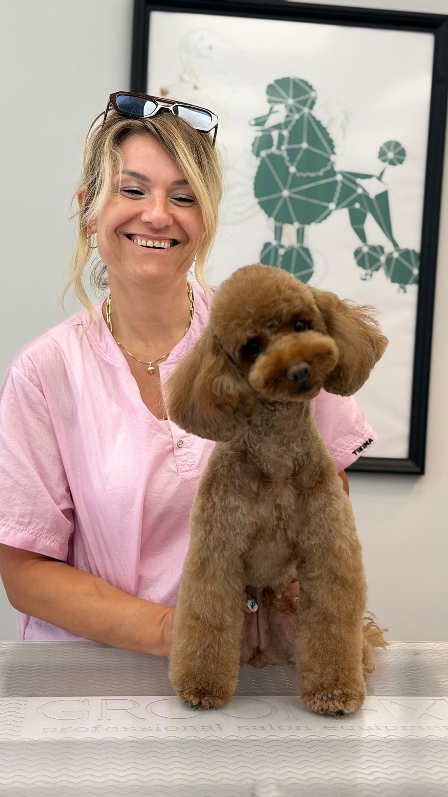

Dostlarınız İçin
Sevgiyle
Yoda Veteriner Kliniği'nde Dr. Tekin Aydın'ın 30 yılı aşkın deneyimiyle minik patiler ve tüylü dostlarımıza en modern, şefkatli ve güvenilir sağlık hizmetini sunuyoruz.

Neden Yoda Vet?
Dr. Tekin Aydın'ın kişisel ilgisi ve uzmanlığıyla evcil dostlarınıza en iyi bakımı sağlıyoruz.
30+ Yıl Deneyim
Dr. Tekin Aydın'ın 30 yılı aşkın klinik tecrübesiyle güvenilir tedavi.
Modern Teknoloji
Son teknoloji tanı ve tedavi cihazları ile hızlı ve doğru sonuçlar.
7/24 Acil Hizmet
Acil durumlarda gece gündüz demeden yanınızdayız, tek telefon yeter.
Kişisel İlgi
Her hastamıza özel, birebir ilgi ve şefkatli yaklaşım.
Hizmetlerimiz
Kapsamlı veterinerlik hizmetlerimizle dostlarınızın her türlü ihtiyacını karşılıyoruz.
Aşı ve Koruyucu Hekimlik
Düzenli aşı takvimleri ve koruyucu sağlık hizmetleri.
Diş Sağlığı
Diş temizliği, çekim ve ağız sağlığı tedavileri.
Görüntüleme
Röntgen, ultrason ve ileri görüntüleme teknikleri.
Cerrahi Operasyonlar
Yumuşak doku ve ortopedik cerrahi müdahaleler.
Bakım & Kuaför
Yıkama, tıraş ve tırnak kesimi gibi bakım hizmetleri.
Laboratuvar
Hızlı kan ve idrar tahlilleri ile anında teşhis.

Dr. Tekin Aydın
Veteriner Hekim & Klinik SahibiMerhaba, ben Dr. Tekin Aydın. 30 yılı aşkın süredir veteriner hekimlik yapıyorum ve hayvan sevgisiyle dolu bir ömür geçiriyorum. Yoda Veteriner Kliniği'ni, minik dostlarımıza kendi evimdeki gibi sıcak ve şefkatli bir ortamda hizmet verebilmek için kurdum.
Kliniğimizde her hastamı bizzat kendim muayene eder, tedavi sürecini baştan sona takip ederim. Çünkü biliyorum ki, dostlarımızın sağlığı güven ve sevgiyle başlar.
30+
Yıllık Deneyim5000+
Mutlu Hasta7/24
Acil DestekPet Groomer
Sevimli dostlarınız için profesyonel bakım, tıraş ve güzellik hizmetleri.

Arzu Arıkan
Pet Groomer & Bakım UzmanıMerhaba, ben Arzu Arıkan. Yıllardır evcil dostlarımızın bakımı ve güzelliğiyle ilgileniyorum. Yoda Veteriner Kliniği bünyesinde, sevimli dostlarınıza özel bakım hizmeti sunuyorum.
Her dostumuzun kendine özgü bir karakteri olduğuna inanıyorum ve her birine özel, stressiz ve sevgi dolu bir bakım deneyimi yaşatmayı hedefliyorum. Tıraş, yıkama, tırnak kesimi ve daha fazlası için buradayım.
2+
Yıllık Deneyim500+
Mutlu Dost5★
Müşteri MemnuniyetiRandevu & İletişim
Dostunuz için hemen randevu alın, en kısa sürede size dönüş yapalım.
Adres
Plevne, Çayır Sok. No:37, 10050 Altıeylül/Balıkesir, Türkiye
Telefon
+90 533 342 93 85
E-posta
tekinaydin1036@gmail.com
Çalışma Saatleri
Hafta içi: 09:00 – 20:00
Hafta sonu: 10:00 – 18:00
Acil: 7/24